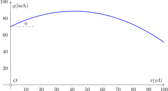

An archer fires an arrow at a target that is 100 yards away. The target center is 51.2 inches off the ground. The arrow is released at a height of 70 inches from the ground with a speed of 400 fps. What firing angle \(\alpha\), measured with respect to the horizontal, is required to hit the target?
Horizontal motion
\begin{align*}
v_{x0}=400\cos\alpha
\end{align*}
\begin{align*}
x(t)=x_0+ v_{x0} t=0+(400\cos\alpha) t
\end{align*}
The time, let's call it \(t_{hit}\), when the arrow reaches 100 yd = 300 ft is
\begin{align}
300=(400\cos\alpha) t_{hit}\Longrightarrow t_{hit}&=\frac{300}{400\cos\alpha}\nonumber\\
t_{hit} &=\frac{3}{4\cos\alpha}\tag{1}
\end{align}
Vertical motion
\begin{align*}
v_{y0}=400\sin\alpha
\end{align*}
\begin{align*}
y(t)=y_0+ v_{y0} t - \frac{1}{2}gt^2=\frac{70}{12}+(400\sin\alpha) t -\frac{1}{2}(32.2) t^2\\
\end{align*}
We want the vertical distance to be 51.2 inches at the time when the arrow hits the target. We therefore set \(y(t_{hit})=51.2~\)inches.
\begin{align*}
\frac{51.2}{12}=\frac{70}{12}+(400\sin\alpha) t_{hit} -\frac{1}{2}(32.2) t_{hit}^2\\
\end{align*}
We can subtract the 51.2/12 from both sides
\begin{align}
0=\frac{18.8}{12}+(400\sin\alpha) t_{hit} -\frac{1}{2}(32.2) t_{hit}^2
\tag{2}
\end{align}
Solving
We are left with two equations, (1) and (2), and two unknowns, \(t_{hit}\) and \(\alpha\). The question wants us to find \(\alpha\). We therefore use equation (1) to remove \(t_{hit}\) from equation (2). After substituting (1) into (2) we are left with
\begin{align*}
0=\frac{18.8}{12}+(400\sin\alpha)\left(\frac{3}{4\cos\alpha}\right) -\frac{1}{2}(32.2)\left(\frac{3}{4\cos\alpha}\right)^2\\
\end{align*}
Using the fact that \(\tan\alpha=\sin\alpha/\cos\alpha\) and the identity \(1/\cos^2\alpha=1+\tan^2\alpha\) we are left with
\begin{align*}
0=\frac{18.8}{12}+300\tan\alpha -\frac{9}{32}(32.2)(1+\tan^2\alpha)
\end{align*}
Some more rearranging (note we have to expand out the \( (1+\tan^2\alpha) \).
\begin{align*}
0&=\frac{18.8}{12}-\frac{9}{32}(32.2)+300\tan\alpha-\frac{9}{32}(32.2)\tan^2\alpha\\
0&=-7.49 +300\tan\alpha - 9.06\tan^2\alpha
\end{align*}
The above expression is quadratic in \(\tan\alpha\). We can define \(x=\tan\alpha\).
\begin{align*}
0&=-7.49 +300x - 9.06x^2
\end{align*}
Solving the above quadratic equation we find two roots
\begin{align*}
x=\tan\alpha=0.0250\,\qquad x=\tan\alpha=33.09\\
\end{align*}
and therefore two angles at which the arrow can be fired to hit the target:
\begin{align*}
\alpha=1.43^\circ,\qquad \alpha=88.3^\circ
\end{align*}
Both of these solutions are physical. You may wonder how its possible to hit the target if shooting the arrow almost vertically. This is because the arrow spends more time in the air which allows it to reach its distance with the smaller horizontal velocity. The amount of time the arrow spends in flight is
\begin{align*}
t_{hit}=0.75\,\text{s},\qquad t_{hit}=24.8\,\text{s}
\end{align*}
Clearly the lower angle will be preferred. A major simplification is our neglect of air resistance. Choosing the lower angle where less time is spent in the air will result in much less drag on the arrow.
